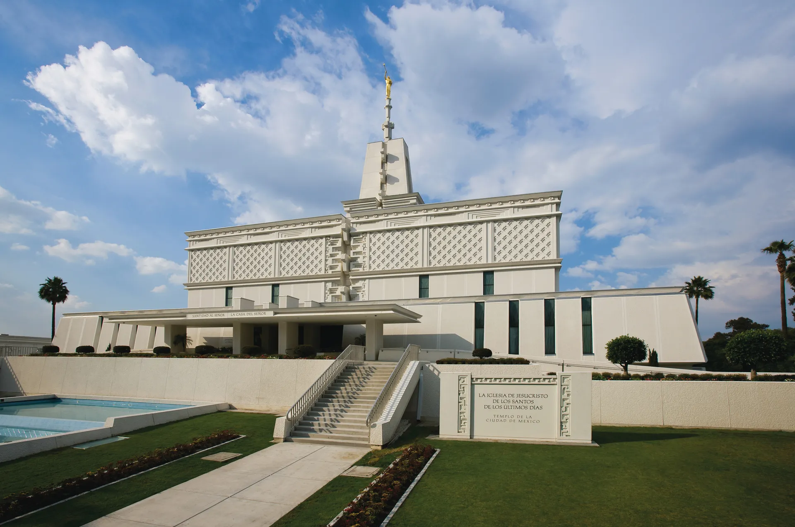

Temple Album
Home
Old
New
Large
Small
Home

Juárez City, México Temple
Colonia Juárez, Chihuahua Temple
Zapopan, Jalisco Temple
Hermosillo, Sonora Temple
México City Temple
Mérida, Temple
Monterrey, Nuevo León Temple
Oaxaca Temple
Puebla, Puebla Temple